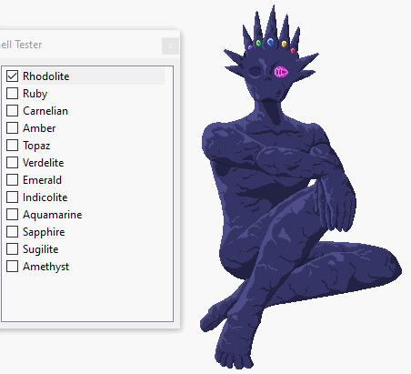
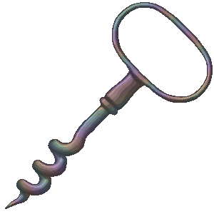
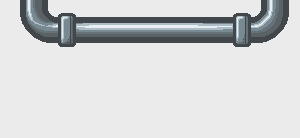
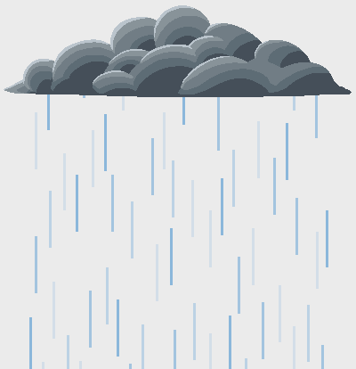
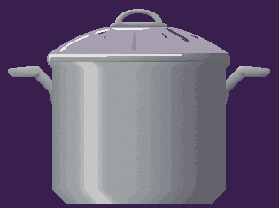

Now that I've got a blog to place my thoughts, I feel compelled to fill it... so, here is a retrospective on my ukagaka activities during 2025! I make yearly art summaries to help myself keep track of my progress in art, and I figure it might help to do that for other areas as well.
Note that the Ukagaka Dream Team yearly summaries have been moved to the Ukagaka Dream Team's website, so everything here is just about my personal activities.
Also, there will be spoilers for ghosts and such that I have worked on, here! If you haven't played with something I made this year and want to try it first, do so before reading this article.
Complications
While I'm not willing to divulge many details on a public-facing blog, I would be remiss not to mention that this year has been especially hard for me in my personal life. While I've had a lot of time available to me, I was not able to make use of it effectively, in large part due to headaches. This hampered progress on many projects, and a lot of things I wanted to get done this year had to be put on hold.
I'm doing significantly better now, and I'm hopeful that 2026 will be better!
New ghosts
First of all, lets have a look at new ghosts I worked on this year. They're the fun and easy part!

Pictured: Hoard of Shinies, Ye Olde Cursed Tower, Ghost Club!!!, Doodle Daydreams, The Garden of Lost Souls, Ghost Yaminabe-okawari, and Wanted: Dead, Alive, or Other.
Note: I'm not including the Aosora port of Xander's Refuge here because it doesn't have any new content, it's just a port of the original YAYA version. I'll write a bit more about him later.
There are two immediate things that stand out from this group of ghosts. First, they were all made for events except for one of them. Second, 5 out of the 7 use freeshells!
The first point isn't really that surprising, most of my ghost output has been from events for a while. Events are fun and give a strong incentive to develop something new!
The second point is definitely a new development. Last year was the first time I tried using freeshells, and one of those uses was dictated by the event I was partaking in, so there was only 1 instance where I picked out a freeshell to use on my own. And even then, when I picked that freeshell on my own, it was mainly to disguise myself for Ghost Masquerade. I did want to give it a try in general, but I was still feeling a bit unsure of it.
As you can see, that uncertainty has dissipated entirely! Now I love using freeshells and am very grateful to the artists who create many wonderful materials for others to use. I struggle a lot with finding the energy to draw these days, so they are very helpful for me. Plus, working with a pre-made shell is a very different development process, and I've found it to be very fun.
Ghost Yaminabe-okawari
Or, more properly, ゴースト闇鍋-おかわり (translated as Ghost Dark Pot-refill). Galla and I worked on an entry for this together again, and it was a lot of fun! Our theme this year was "Rules of Life", and we came up with 50 weird "rules" and wrote bizarre stories to describe the characters interacting with them.
It was really fun to paint an absurd world with esoteric rules. None of it makes sense!
I had a little more experience with Satori this time going into it, and it was nice to get a chance to work in Satori a little more. I don't know that I'll ever learn all the intricacies of Satori, but it's nice to have a general understanding, enough to write a simple dictionary file.
Hoard of Shinies
I made Hoard of Shinies kind of on a whim. I had just released the Aosora port of Xander's Refuge, and I was really excited about the possibilities of Aosora. (More on Aosora later.) I was very aware that Xander's Refuge is written in a very YAYA way, and because of that, the Aosora port is also written in such a way that it is trying to mimic his YAYA features rather than leaning into Aosora's strengths.
This was somewhat intentional as I wanted to have a 1:1 comparison that YAYA developers could use as a jumping off point, and it was also a demo to prove that Aosora had complete enough features to make a ghost like Xander's Refuge in its entirety. But, I didn't want it to be the only example, since I was certain that there would be things Aosora could handle better if I coded them in an Aosora-first way. So, I thought it would be best to make a whole new ghost in Aosora!
I ended up picking the Merfolk May freeshell by Kipali, and I did a little bit of setup work, and then convinced myself that I had other things to work on and probably didn't have the time for this. But then, a day or two later, the urge hit hard again and I committed to setting up some very basic mechanics, 20 random dialogues, and then releasing it as a tiny ghost written in an afternoon.
This worked out well! It was a very quick ghost to throw together, and it was Aosora through and through. (Well, except for the parts where I still tend to think in a very YAYA way, but you know...) I decided to keep working on the ghost, and over the next month or so I pushed out several small updates that added new functionality, cleaned up the code, and added more dialogue. It was a very fun and energetic development process.
She's a very simple ghost overall. She has a few mechanics: she picks a random selection of dressups when she boots (rather than letting the user control them), she has a reduced motion mode, if you use the balloon squidloon you can select which color to use, she reacts to certain ghosts, and a few other little things. Other than that, she's just a straightforward idle companion that talks to you about exploring, treasure, and other mermaid-related topics!
The Garden of Lost Souls
This was the first ghost I started work on for Ghost Masquerade 7. I had planned to keep this relatively simple, but then it ended up being a much bigger task than expected!
This ghost uses the freeshell 冷たくて、静かな, by じる. I chose the black night gown to be the default instead of the white one that is normally set, and I'm glad I did, since another ghost in the Masquerade used the same freeshell! It made it a little easier to quickly tell them apart.
She has two main mechanics. The first is, of course, her input box prompts when you open her. I knew I wanted some sort of user interactivity, and I thought this method of answering questions could be fun, especially since if you actually do forget the details then she will recognize that you've forgotten!
This ended up getting more complicated than expected because the input boxes are not a binary yes or no answer. You can answer correctly, incorrectly, partially correctly, nothing at all, "yes", or "no". I think I also made her track your incorrect answers, and notice if you input the same incorrect answer again in future instances. This, of course, meant a lot of branching paths! It all moves in the same direction, but it was a lot to keep track of. Depending on what things you've forgotten, her first conversations with you will be chains explaining the relevant details to you.
After you've been reminded, or if you answered all her questions correctly, then you'll transition into the normal random dialogue, where her second mechanic is. It can be thought of as a sort of "garden wandering" mode, because all of her dialogue is chains! She picks a dialogue, and it always starts a chain of 5 or so dialogues. It feels a little like a linear story ghost, but also not completely, because the dialogues are chosen at random. It's sort of in a place between the two! Linear sections, but chosen randomly... I enjoyed writing this a lot and would love to see more ghosts with this sort of style.
Ghost Club!!!
This ghost was also made for Ghost Masquerade 7, and I had the idea for it after I found out we couldn't make collaborative entries this year. I decided I wanted to try something very unusual to cover my tracks, and so I made this ghost in Misaka, a SHIORI I've looked at before but never used.
This ghost uses the freeshell Sheet Cat by SmokyCinnamonRoll.
Working with Misaka was interesting! By this point I'd already worked with YAYA, Satori, and Aosora, so I already had a good idea of how much knowledge you can transfer between SHIORI. This one was definitely a challenge to pick up because I was working with roughly machine translated documents in an offline environment, and all of the errors are in Japanese (and they displayed in mojibake, probably because I wasn't running SSP through Locale Emulator).
I learned that Misaka is a very old SHIORI, and stopped receiving updates a very long time ago. I believe it is by one of the people who worked on the baseware MATERIA? So it's very much from the dawn of ukagaka. It reads files exclusively as Shift-JIS rather than UTF-8, as well.
Due to those reasons, I do not generally recommend Misaka to English developers, particularly new developers just starting out. Use a SHIORI that is able to work with UTF-8, has error messages in English, and ideally is still updated. YAYA and Aosora are great options. Kawari is an option also, though it no longer receives updates.
I do think it is interesting to try Misaka out though, so if you want to do it out of curiosity or just to learn about more SHIORI, then go for it! It's a pretty straightforward SHIORI, though it doesn't have any super advanced functionality as far as I could tell, so it's best for creating simple ghosts with. It has some odd quirks and unique features that are interesting as well.
Misaka exploration aside, the ghost itself is about a very shy cat that feels a little more confident by wearing a costume. The ghost is almost exclusively idle dialogue, no complicated functionality here. Although, I did also add responses to some external events, and also set him up to react when other ghosts are booted! I think they're fun additions. They were easy to add and spice things up.
Doodle Daydreams
This was our first entry for Ghost Jam this year. This was a collaboration between myself, Galla, and Kipali. This ghost was written in YAYA, and was created within the first 48 hours of the jam!
The idea for this ghost was originally a potential angle I came up with to make a ghost of some of my OCs. I do not wish to make a ghost of those OCs, but I repeatedly have fun ideas for how to spin them as a ghost regardless. This idea was one of the many rejects, but I really liked this idea and thought it could be fun to pitch as a jam ghost. Both my collaborators were on board with it, and so we were set.
This ghost is a dressup game with a dialogue mechanic attached. Kipali drew lots of great clothing and accessory options! You can mix and match to your heart's content.
The dialogue mechanic is a pretty simple one. Depending on what pose is selected, the dialogue pool changes. In the adventurer pose, the dialogues will be themed after adventuring and slaying monsters, etc. In the demure pose, the dialogues will be about tea parties and rivalries and other ladylike things. Etc.
There are currently 3 poses in the ghost, so 3 different dialogue pools to enjoy! All of them have lighthearted silliness, and there are a lot of word groups to help keep things fresh.
There is one other thing worth noting, which you might not even notice if you're not a developer and aware of specific mechanics. When the ghost is booted, the doll starts out plain with no clothes, and the clothes fade in after a moment. When the ghost is closed, they similarly fade out before the close event completes. This is a trickier feature than you might think at first!
Since she has many clothing options, and they're in different poses, it would be out of the question to set up a fade out animation for each one. Maybe there's some convoluted way we could have tried to rig it up, but it would likely have been janky and hard to get working.
Instead, I solved this problem by using both the kero and the sakura. Thankfully the ghost has aliased edges and no semi-transparent areas on the base body, so I could get away with this approach! The kero is moved to the sakura's position, in the same pose, and then the sakura can be faded in and out with sakurascript's alpha tag to make the clothes appear and disappear. It works so smoothly that you won't even notice!
Despite only having a 2 day window to work on this ghost, she ended up only needing some very minor bug fixes afterwards! Galla and I are getting a lot better at correctly assessing the scope of our projects.
Ye Olde Cursed Tower
This was our second entry for Ghost Jam this year. This was a collaboration between myself, Galla, and Pommy. We had 5 days to work on this ghost, and we wrote it in Aosora because... I don't remember! It may have just been that I wanted to work with Aosora more.
This is a fairly dark ghost which plays on the idea of dragging characters into your space. Quite a few English ghosts have the basic premise that you've dragged the character to your desktop against their will, and in this case, while it's not perceived as literally your desktop, it's definitely characters held against their will.
The characters are souls bound to items, by default a flask and a gem. You can pick different items for them to inhabit, different orientations for the items, and different colors of the items. Additionally, the balloon has a variety of colors and you can pick a color for each character.
They will chat with each other while idle, and some of their conversations are fairly long. You can also pet them, which they have different reactions to.
Also, the way they will react depends on their proximity to each other! If you set them far apart on your desktop, they will detect this and no longer be able to hear each other, and their dialogue will change. Bring them back together again and they'll return to normal. You can torment them, if you want!
The other very unique mechanic they have is related to uninstalling. I've played a little bit with uninstall dialogues before, particularly in Zana's Laws, and realized that they can be used for some really unique interactions. During the last couple days of jam, we had an idea for the uninstall dialogues, and decided to pursue it.
In this ghost, choosing to uninstall is choosing to free them from the objects they are bound to. It makes sense, after all! But, some users (like me) may have uninstallation disabled through developer mode, or choose to reinstall the ghost afterwards. This is something we can detect (in typical usage) and make them react to. They are not happy to be reinstalled.
If you uninstall them again, the events that unfold will be different. And should you try to install them after that... it doesn't work so well. Have you ever heard of a ghost with a post-uninstall dialogue pool? If not, you have now! I sincerely doubt anyone has seen this by any method other than code crawling, but it makes me happy to know it's there anyway. What a weird ghost! It makes me smile.
Wanted: Dead, Alive, or Other
This was our entry for Idea Adoption Jam 2025! It was a collaboration between myself, Galla, and Miss. For the first time in a while, we decided to take the whole 7 days to work on one ghost. I think it paid off! It makes use of 10 different freeshells, all of the freeshell credits are in the readme.
This ghost has an active play style, although it does have idle content as well. It centers around interviewing candidates for an experiment, with questions to ask each candidate and the ability to reject or accept whoever you feel like.
5 of the questions are static, and 5 of them are randomly pulled from a list each time you open the ghost. This gives it a bit more variety each session! The different candidates will answer the questions in different ways, and their responses will be recorded to a log for the session.
The outcome of the experiment depends on how many candidates you accept vs reject, and also how thorough you are about asking questions! Closing the ghost is ending the interview session, and when you open it again you will see the results of the last experiment and some nudging for how you can adjust things to get a "success". Of course, you don't have to aim for successes. It's entirely up to you what result you want to aim for!
There's also the matter of Michael... perhaps it's best to leave you to discover him on your own.
Other notable releases
There are a couple of other things I released this year that I want to make mention of.
Ancient Gem
This is a set of freeshell, balloon, and calendar skin that I released for Etc. Jam this year. It's actually not done yet!
I released the freeshell in a basic form for the event, but I actually want to expand it with several alternate arm positions. I have these half completed. The arms are roughed out, they need some adjustment and then rendering, and I can finally get the update pushed. I've been slowly working on it here and there, but it's been hard to find a time when I've been well enough to work on it and not also had other priorities. I will get it done! I like it too much to leave it unfinished.
Ye Olde Soul Spell
You know, I'm only just now realizing that I hardly made any balloons this year. That's a bit unusual for me! I guess it might be because I used so many freeshells, and didn't feel compelled to make balloons for them.
Anyway, I wanted to call this one out in particular because it has two traits that I think are fun. First of all, it's a round/oval balloon! I don't usually make those, but I really wanted to with this one, and I found a good technique for doing so. (Whether I can remember that technique the next time I make a round balloon remains to be seen...) I think the text area came out a bit smaller than I'd like, especially since the ghost it's for has long back and forths, but it's workable.
Second, the thing I really wanted to talk about, is the patterns I added to this! I absolutely love the glow effect around the edges, and even moreso with the special patterns I added. As is often the case with balloons that Galla and I make for our ghosts, this one comes with a variety of color options. And, even though it was extra challenging for this particular design, I also added some patterns.


The space pattern came out fine, but mostly I am so in love with how that rainbow pattern came out. I tried it on a whim, and with the curved pattern lines and that glow effect, it looks so striking and vibrant around the edges while still having a very readable text area. Something about it scratches my brain in just the right way! I'll definitely try to replicate this again in the future if I get the chance.
Actually, it's probably worth mentioning that I reused this rainbow pattern for my Needle shell Corkscrew. The "iridescent" effect that can be applied via dressups is in fact the same pattern that I made for this balloon! Having a curved design rather than straight bars of color really helps it to blend in and feel natural there, I think.
Hydrate shells
I made three shells for Hydrate this year, two of them for 8/20 Hydrate Shell Jam, and one the day after because I wasn't feeling super well and had a third idea that I picked at throughout the day. I really love how these came out!
Leaky Pipe is the first one I made. I had the idea for this one a while ago because I have been doing a lot of development on a laptop this year, and I'm not used to working on just one screen. So, having Hydrate be more subtle and up at the top of the screen is really helpful for keeping it out of the way. In fact, I often place it in the corner of the screen, since it looks great there too! It has a really minimal footprint, especially if you set it to 50% scaling.
I couldn't resist adding a bunch of color alts to it, so it can be customized for whatever mood. Also, the dripping animation is toggleable, and has various speed options. There are two that drip at a randomized rate, and two that drip at a steady rate, so you can pick which is more pleasing to you! Currently, I actually have the dripping off since it was feeling a bit distracting. I just have a black pipe in the corner, out of the way. This has been my usual setup on the laptop for a while now.
After this, I made Stratospheric Delivery. I'm not going to lie, I made this mostly because I had created the thumbnail for Weather Station and really liked how that came out. Also, I thought it would be fun to position the cloud overtop of other ghosts and let it rain on them! Or, alternatively, put ghosts on top of it like they're standing on a cloud. Plus, a cloud just makes sense for Hydrate.
There are color alts here too, naturally. Also, I spent a while setting up that rain animation. I was surprised how finely I had to slice it to make it appear to be falling! I think the rain animation for this came out in a really interesting way. All of the rain is handled with thin images, only 75 pixels tall each, and I used code in surfaces.txt to stitch them together in all the different combinations needed for the full animation. Also, the fade-out at the bottom is done with a single file that applies the transparency. This way, if I don't like the gradient, I can always change it by adjusting one file! I really like working with surfaces.txt in this way, learning to use this kind of setup has opened up so many possibilities for me.
Finally, I made Stock Pot. This was inspired by the actual stock pot sitting on my stove. I drew it entirely with a mouse because it felt like less mental effort that day. There are no color alts here, but there are some animations that I like very much!
In particular I want to highlight the "Simmer" animation, where the lid is on and water drips down the inside. I'm not really sure how the idea for this one came to me, honestly! The way it works is that the lid base has holes in it where the water trails will go, and then I plug those holes with additional pieces added by animations so that it looks whole. Those animations are on always intervals, and they go through a few frames that simply erase the "plug" bit by bit (I literally copied each frame and erased a bit from the top), revealing the hole. Then, the original plug fades back in and the animation restarts. Also, those animations have a randomized delay after their first frame, so that they don't all happen in a predictable order! I find it very mesmerizing to watch. I'd like to do more with this technique sometime.
UDLs
It might be worth noting that I also made some UDLs this year. Usually I'm not a big fan of them, however, I found some uses for them this year that I thought were worth the minor annoyances I have with them.
Really, it started because I found Misaka very hard to parse! Misaka has a lot of nested brackets/parenthesis... counting them and determining at a glance which was which was kind of a headache. So I decided to make a UDL to help me tell them apart. There's no other syntax highlighting in Notepad++ that works well for Misaka anyway since it doesn't seem to resemble other programming languages.
Highlighting the brackets and parenthesis was very helpful, of course. But then I thought, what if I also used this to dim the sakurascript tags in dialogue? That could make it easier to parse the dialogues themselves. That's not really an option in YAYA, but I could make it happen here... so I did, and that was helpful too. Honestly, a UDL is a pretty good solution for Misaka!
With the thought of dimming certain things in my mind, I also decided to make one for surfaces.txt. I thought it might be nice to dim the coordinates field if you have it set to 0,0. I also highlighted some other things, which can help with distinguishing them and also with noticing typos. However, it's still hit or miss whether I use this UDL or just use C highlighting... C highlighting does well enough for me that I don't need the UDL.
Of course, that all had me thinking... one of the strengths of writing in Aosora is that the dialogues are not in quotes, and you can write them across multiple lines. This is very handy, however, it means that Javascript syntax highlighting highlights weird stuff in talk blocks. But since it's better to separate talk blocks and function blocks anyway... what if I created a UDL for Aosora's talk blocks specifically? So I did, and like the Misaka UDL I made, it is also focused largely on dimming sakurascript tags. I like this one a lot! I sometimes forget to switch to it, but I think it has a really nice effect when you're in a file with a lot of talk blocks.
Major updates
This section is probably my biggest motivator for making this post, honestly. Finally, after many years of waiting, I managed to get some major updates out there. They're not hanging over my head anymore! I feel so much better.
Weather Station
Weather Station was the first of these. Weather Station was kind of in a half acceptable state. I was starting to develop better coding practices when I made it, but there were lots of things in the code that I could definitely improve. The catalyst for me to finally update it was when I opened it on my laptop while offline, and realized that I simply never considered what should happen when the user is offline.
For context, this year I have spent a lot of time in an environment where I can have a personal laptop, but I do not have access to the internet. So, it's become very important to me to have offline resources, and it's a major irritant to deal with anything that requires internet connectivity all the time, particularly if it doesn't have any offline handling. Of course, it's natural that a plugin that obtains weather data would require online access to work. There's no way around that. But I couldn't believe I hadn't added anything to deal with being offline!
I released a small patch just for that issue, and told myself I wasn't going to work on it any further than that. But... I drew a thumbnail for it on a whim that I really liked, and now that I had looked at the code I had the urge to pick at it and clean it up. So I ended up releasing a major update anyways.

I cleaned up and reorganized the code, fixed bugs, deprecated some references for privacy concerns... I'm much happier with its overall state for sure. There is still more I can do to improve it, but it might be a while before I have the time and motivation to mess with it again.
Hydrate
Hydrate came next. I'd been intending to overhaul Hydrate for ages because its code was ancient and had a lot of bad decisions. I just hadn't had a chance to get around to it yet. But then someone expressed interest in making use of Hydrate's communication event, and I couldn't bear to have them set up something to work with the existing version. I knew I could make it a lot cleaner.
I decided to rip the bandage off and at least update that part of the ghost, and just see how much I could do piecemeal. It turned into 5 updates in 5 days, each one cleaning up the code a bit more and bringing in new features that I'd been wanting to add. I deprecated some old features that had been bothering me for ages, and I set up a whole new communication event that is much easier to work with.
It was a very fun process! I probably would have continued working on it for a few more days, but I did this just before Idea Adoption Jam, so I had to stop to participate in the event. There's actually one more major feature I would still like to add to Hydrate at some point once I can sit down and focus on it. (Also, I found a major bug that I'm hoping to push a patch for in the next few days... oopsie!)
I'm so relieved to have Hydrate in a state I can be proud of. Much cleaner code, much smarter functioning. Hydrate is one of my more popular ghosts, so having it be a poor example for folks that might want to learn to make ghosts was eating at me.
SSP Angel
After SSP's English translations were updated, I knew I needed to update SSP Angel also, so that they were in line with SSP's current state and wouldn't confuse newcomers. This took a lot longer than I was hoping!
Unfortunately, digging through all of their technical dialogues is very tedious... but I finally managed to do it. I also realized that some information and tips were incorrect or needed to be explained better, so I made various other adjustments.
This wasn't a major overhaul like the others, but it was very much a needed update! I was hoping I could also add a significant amount of new content in this update, but I didn't end up having the time. Perhaps another day. I do find them very fun to write for when I get the chance.
FLUX and the music player
These two are somewhat of a linked pair. FLUX has been in need of an overhaul for years, much like Hydrate. It is one of my more popular ghosts, and I have been unhappy with the state that it is in.
For the full context of this update, you should read the FLUX v2.0.0 blog post. In short, I deprecated several old functions that were a bad idea, made major improvements to the music player, added a new Spanish translation by Celeste, and disabled the Polish and French translations until they can be updated.
The whole custom shell system is the thing that's been bugging me the most, since I think it was a really bad idea from the start. You can read the blog post for my reasoning around that. It's been eating away at me to see it getting use when I've been intending to do something about it for years. I felt like I was leading people down a path that would end up hampering them later, and the more people used it before I could get the overhaul done then the more shells I would have to work to preserve after the fact.
I have finally ripped that bandage off and taken that scary step. It's still something that will probably haunt me for a long time, but at least I don't have to worry about things getting any worse over time.
Additionally, FLUX is finally caught up with all the new features and improvements that I had made to the music player code! I was honestly shocked to see how far behind the last version was, I've been running my WIP version for a long time. This was a very long overdue update...
The music player itself got an update as a part of this too, since I found various bugs while I was testing for FLUX. FLUX is now downstream of the music player, which should make it a lot easier to manage these things! If there is an issue in the music player, I can fix it in the music player, and then copy that fix over to FLUX also. That way everyone can get the fixes in the same way, and stuff doesn't get tangled up in FLUX's particular setup which has translations mixed in. Also, if the update has to be delayed for FLUX for any reason, others don't have to wait to be able to update the music player code in their ghosts.
What a relief to finally have this done! I keep FLUX open all the time because I do use it as my primary music player, and I've sort of built up a reflexive response of thinking "I really need to get that update done" every time I look at it. That hasn't left me yet, it seems the reality of this update being pushed hasn't quite sunk in... but I'm hoping that with more time it'll fade.
I still have a couple of other technical ghosts in my sights to improve when I get the chance... I had really good success with finally getting major overhauls done this year, and I'm hoping I can keep that going for a while. I think some of this happened due to the development process I went through with Hoard of Shinies, honestly. Learning to do things piecemeal instead of saving it for One Perfect Update/Release has been very important and allowed me to build up some momentum. I need to remember that!
Events
I don't think I'm going to talk about each individual event here because I already wrote afterwords for each event. You can read those on their respective blog posts: 8/20 Hydrate Shell Jam afterword, Aughost 2025 afterword. Also, there is the Needle Day 2025 post.
The major thing of note here is that these events have finally escaped Discord! We've been recording them on the Ukagaka Dream Team Wiki, of course, but the events themselves were hosted entirely within Discord, and all of the discussion around them and participation in them took place there.
Over the past few years, I've been steadily becoming uneasy about how reliant we are on Discord. It feels a lot like we have all of our eggs in one basket. Things are easily lost there, and if for any reason the server is taken down or Discord goes down, we stand to lose much of what we've built.
I talked about this in my summary for the Ukagaka Dream Team in 2025. We've been steadily working towards becoming independent of Discord. Our wiki was the first step in this process, and perhaps one of the most important. We've made it possible to find the work of other ghost devs even though it's scattered across the web, we've collected our knowledge, and our history is preserved there. There are lots of things I'd like to improve about it still, but if all else should fail, the wiki will let us recover most of our work even if it takes a bit of digging.
We also made Ghost Jam available outside the server. This opens it up to more participants, and ensures it can continue even if something happens to the Discord server. Then, we followed suit with Etc. Jam. Every event hosted by the Ukagaka Dream Team no longer requires Discord to function.
With that being the case, I was not comfortable continuing to host my own events in Discord only. So, when they came around, I finally made a space for them on my website and decided how they should be handled. I still expect that most participants will partake through Discord, at least for the time being, but it makes me feel a lot better to know that they are no longer trapped there. Anyone can participate, and no matter what happens to Discord, they will be preserved!
I also made a Tumblr blog for Aughost in an effort to make participation easy for ghost devs who frequent Tumblr. But of course, I wasn't satisfied trading one walled garden for another, so this is not a substitute for putting them on my website as well.
(Sidenote: Yes, my website is currently hosted via GitHub Pages. I am unconcerned about this because I have all of the files that make it up on my computer, and could easily move them to my own webspace at any time if the need arose. That's one of the perks of writing HTML files directly!)
Translation work
This has been a very active year for translation for me. I was hoping to make a lot more progress on the AYAYA translation, but it is what it is. Perhaps next year! The pages there are generally very straightforward, so they're not hard to do, I just need my brain in working order...
I put a higher priority on translating Aosora's documentation since that is a new and upcoming SHIORI. I wanted to give it the best chance possible in the English community! We've been working with YAYA for years despite not having translations readily available, so that could wait a little longer, but I wanted Aosora to have the best possible start for the English community. I am very excited about the possibilities with Aosora, and I think it could be very helpful for us!
Besides this I have also been working on keeping Ukadoc's English translation up to date, which is thankfully easy with it being set up on GitHub. Honestly, this maintenance work has taught me a lot of new things about Git this year! That wasn't something I expected, but it's very much appreciated.
Many thanks also to Pona for allowing me to clean up SSP's English translations, and for answering my myriad of questions as I tried to figure out what some of the functions that I've never used before actually did. I could not submit my updates to the text directly, so I think it was a lot of effort on his part as well to implement the changes. I appreciate it very much!
Website improvements
Hey, check it out! You're reading this on a blog! A blog that didn't (technically) exist until this year! Wow...
Ever since I overhauled my website in 2023, there have been various parts that are unfinished or in a rough state. It's still not finished! But, I took some major steps this year to get it towards where I want it to be.
First of all, hello, I created a blog section. I've been planning this for years; when I moved to this new URL I had the foresight to put all the advent calendar articles into a "blog" folder because I knew I wanted to eventually have a blog. It just took a few years for that to pay off. That's also why I say that the blog didn't technically exist before... there were some blog posts that existed before, they just didn't have a home.
Mostly I am using the blog to announce new releases and updates, and also to host my events. Occasionally, there might be posts like this, or other musings if I feel inspired and have the time. It is, as with the events, another step towards independence from Discord.
I made a detailed post with my dev history so far, most of which links to messages in Discord. Honestly, if I ever find the time, I'd like to go through and screenshot each of those Discord messages in case something happens... we'll see if I get to it.
Now that I have this blog, it is the primary place that I post things. Whenever I release or update something, it goes on the blog first before it is posted to Discord or anywhere else that I may choose to post it. No matter what, this blog comes first. That way, it is a complete history of everything that I'm doing, and should anything happen to Discord or any other platform, my history will be preserved on my website. It takes more effort now! But I feel very good about using this blog, and I would not trade the resilience it gives me for any convenience.
The blog also comes with an RSS feed, which was fun to set up. I think it's especially fun since ghosts can act as an RSS reader, so you can use ghosts to keep up with my ghost-related blog! I would love to see RSS feeds get more use in the ukagaka sphere, it's another form of resilience against changes made by big platforms, because you can create a feed entirely on your own.
With the addition of the blog came an update to my website's front page. I wanted to list recent blog posts there, and I wanted to have another section to break things up, so I added some links and banners. I'm pretty happy with how it came out! I'm planning to keep this section pretty minimal, it mostly links to Galla (who I do a lot of collaborative work with), and some projects that I've contributed to. Also, a silly note about how you can't support me because I don't take donations. I was going to make it clickable and have the message change, but I got pulled away by other work before I could find a good way to do it... (If you really want to support me, just interact with my work and send me some kind words now and then! If you're actually reading this whole blog post, let me know. I'd honestly be surprised if anyone makes it this far...)
Another major addition was the "sort and filter" option on every index page. Was that really only added this year? I can't imagine life without them now! I mostly added them for myself... I occasionally wonder things like "how many ghosts did I draw for in 2024", and now I can quickly answer that question!
I'm also working on things such as image galleries and whatnot... I still haven't filled in the ghost pages and such as much as I'd like to. I might reconsider how much I was hoping to add to them. I need to sit and do some thinking on this. I simply make too many things to spend a ton of time on each page... I'll need to find a balance.
Programming advancements
I'm always learning more about programming, but I made some particularly notable leaps this year that I want to give a quick mention. Although, really, this is mostly a ramble about how much I like Aosora, and what I learned from using it...
Why I'm excited about Aosora
First of all, Aosora became a thing and I took an interest in it. I don't know if I've expressed exactly why I think Aosora is a big deal, so let me do that here.
I've done a little bit of experimentation in Satori before, particularly for Countdown and the Ghost Yaminabe events. There's been talk for years in the English community about how Satori is supposed to be a super easy language to write ghosts in, so much so that the majority of Japanese ghosts are written in it. So I wanted to learn about it. My key takeaways from that experimentation are this:
First, it is optimized for writing with a Japanese keyboard layout. That makes sense, it's kind of a pain to switch your keyboard layout back and forth to switch between writing dialogue and writing common sakurascript tags. The very common sakurascript tags are made super easy to type: surface changes can be done with full-width parenthesis and numbers, switching between the sakura and kero is done by adding a new line and a certain character, and pause tags are commonly set to be applied automatically. (I've always been very jealous of this—you can do this easily in Japanese because the punctuation marks are not also used as code! It's a bit trickier in English...) This is a major benefit if you write a ghost in Japanese, but if you are writing in English, then it actually becomes a detriment because it is harder to write rather than easier.
Second, Satori's whole structure is very different to YAYA's! YAYA and some other SHIORI (notably Misaka) have a sort of "pool" structure, where you define one function and then put multiple dialogues into it. In Satori, if you want multiple responses for the same event, you define the event multiple times. That's very different! It's an entirely different way of thinking about the structure. But if you look at various other SHIORI, you will notice that a lot of them mimic this structure of Satori. It seems to be quite important.
It's really fascinating to me, the YAYA style is pretty much ubiquitous in English ghosts, while the Satori style is pretty much ubiquitous in Japanese ghosts. There are exceptions of course, but these are the styles that are very very common.
The thing is, YAYA is a bit tricky, especially if you are not already somewhat familiar with coding. English ghost devs have historically had to learn the basics of coding if they wanted to do anything more than simply replace template dialogue. And even if they just wanted to replace template dialogue, they still had to learn a fair bit (particularly with older templates). By contrast, Satori's method seems a lot more forgiving, and is quite easy to pick up and write a simple ghost with.
I love and adore YAYA, but I have also seen a lot of people struggle with it because they aren't coders and don't particularly want to be. Hell, I wrote a whole guide on how to learn to code in YAYA, but the thing is that that guide is really for people who want to learn to code! People who want to make a ghost are not necessarily people who want to learn to code.
Enter Aosora. I wasn't sure what it was at first, I was very disoriented around the start of the year when Aosora was first introduced. But once it got on my radar, I knew it was going to be a big deal. Aosora is a SHIORI which has the easy to pick up dialogue structure of Satori, while still being capable of more complicated code like YAYA (and in fact, its capabilities exceed YAYA). It is modern since it just started development in 2024, it does not require a Japanese keyboard layout, and ななっち allowed me to translate the error messages which makes it easy to debug.
For the first time, we have full access to a SHIORI where you write in the Satori style, without any of the extra hoops to jump through. I genuinely think that after we've had the chance to make more resources for it and have more ghosts to show as examples, I will be recommending this very strongly to newcomers. There's huge potential here to make ghost creation simpler, especially for newbies, and I'm very excited to see where that might lead!
Object-oriented
Additionally, besides just being easy for newbies, Aosora is great for experienced programmers. It's pulling double duty here in an amazing way. It's both easier for simple things than YAYA, and more powerful and capable of complex things than YAYA. It walks that line so beautifully, and I'm genuinely in awe at the structure here.
Aosora has things such as associative arrays (dictionaries) and objects. Yes, it is an object-oriented SHIORI. Ghosts like Gallery 512 that display lots of characters on screen? So much easier in a SHIORI like this. The class specification is simple, and I'm not sure how much it's going to be expanded if at all, but even with just what we have now it is a huge upgrade for certain styles of ghost.
I learned to program with YAYA, so anything object-oriented has always been a mystery to me. I learned about object-oriented languages, and I've dabbled with them a little, but because I never really had anything to make with them, objects never really sunk into my brain that well. And of course, I never had anything to make with them because what I make is ghosts, and there weren't any object-oriented SHIORI options that I could figure out how to operate.
Aosora solved that problem for me. Suddenly I had the ability to use objects in a ghost context, and so I did, and now I have a much better understanding of them. Dot notation also, which has always been difficult for me. I'm getting lots of practice for things that are in more complex languages that I want to eventually make the leap to using. It's helping me to bridge some gaps in my knowledge, and that's very helpful!
The ghost that I made with objects just released as a part of the ghost luckybag event. I'm not listing that ghost here since I'm considering it a 2026 ghost! I'm not sure when it will get a separate release, but do keep an eye out for it.
I should note, I still love YAYA. YAYA taught me a lot of things, and I think it is a great option to use. For certain styles of ghost, I'll still prefer it because the ability to create pools of dialogue in that specific way can be very beneficial. There are lots of comfort features that exist in YAYA that I haven't managed to replicate in Aosora yet. This is in no way me saying that YAYA is to be avoided, is bad, or anything of the sort. Mostly, I think it will be wonderful to have options!
Other SHIORI
I feel obliged to also note that Kawari has also been an option for us thanks to the work of Okuajub, and this one is also more similar to the Satori style, as far as I know. The main reason I've not mentioned it above is that it no longer receives updates! It also seems useful, and I hope to one day learn how to use it.
And for the heck of it, I noted before that I also explored Misaka this year. While I wouldn't recommend that newbies start using Misaka, I think it was helpful for me to learn the intricacies of another SHIORI. Honestly, if anything, I would recommend folks that want to get deeply into ghost development try at least two SHIORI (after they've released at least one ghost), preferably ones that have a very different style from each other. Learning to use more than one SHIORI is a great way to teach you what is SHIORI-dependent and what isn't! Even though I have a lot of development experience, I still learned some interesting things from trying new SHIORI this year.
Conclusion
Oh boy, that was a lot of talking. I guess a lot has happened this year, and I didn't even list everything.
I missed some of my major goals for this year, but despite that, I still think it was a good year overall (at least development-wise). Lots of good and important stuff happened. I made a lot of things that I'm very happy with, and we took several important steps.
I'm proud of my past self for making it through this year. There were lots of points where I could have stopped and crumbled and given up, but I've persisted anyway. I may not have hit my initial goals, but I adjusted course and still have successes to show. It's been very hard, and I'm grateful to have had Galla by my side throughout, supporting me and collaborating with me.
I think for 2026 I will set more modest goals! Things are too hectic right now for me to bite off as much as I did for 2025. Hopefully I can stay a bit closer to my planned trajectory this time, but who knows!
Thanks for reading, and I hope you'll look forward to whatever I get up to next.